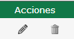
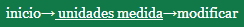

Unidades de medida
Al ingresar a la pantalla de unidades de medida, se le presentará la lista de unidades de medida disponibles para su utilización en el sistema.
Para cada fila de la tabla, es decir, para cada unidad de medida, las opciones disponibles de edición o borrado se encuentran en la columna acciones 
Editar unidad de medida
Para realizar la edición, haga click en el icono del lápiz  al lado de la unidad de medida que desea editar.
al lado de la unidad de medida que desea editar.
Será conducido a una nueva pantalla donde se cargan automáticamente los datos de la unidad de medida seleccionada.
En esta pantalla usted puede ingresar una nueva descripción y/o ingresar un nuevo código para la unidad de medida.
Al finalizar la edición, con el botón  podrá hacer efectivos los cambios.
podrá hacer efectivos los cambios.
En el caso que desee cancelar la edición, puede acceder a la página anterior haciendo click sobre “unidad de medida” en la barra de navegación de la esquina superior izquierda 
Borrar unidad de medida
Para realizar el borrado, haga click en el icono del cesto al lado de la unidad de medida que desea borrar.
al lado de la unidad de medida que desea borrar.
Se le mostrará una confirmación antes de realizar el borrado.
En caso que ya no quiera realizar el borrado, el botón cancelar lo llevara nuevamente a la lista de unidad de medida sin haber borrado la unidad de medida seleccionada.
En caso de aceptar, se borrará la unidad de medida de la lista, y será redirigido a la página actualizada de la lista de unidad de medida.
Agregar unidad de medida
Para agregar una nueva unidad de medida, haga click en el vínculo en la mitad superior de la pantalla “Agregar unidad de medida”
Será conducido a una nueva pantalla donde se encuentran los campos disponibles para cargar los datos de la nueva unidad de medida.
Código: el código de la unidad de medida.
Descripción: ingrese la descripción de la unidad de medida.
Al finalizar la carga, con el botón
En el caso que desee cancelar el alta, puede acceder a la página anterior haciendo click sobre “unidad de medida” en la barra de navegación de la esquina superior izquierda